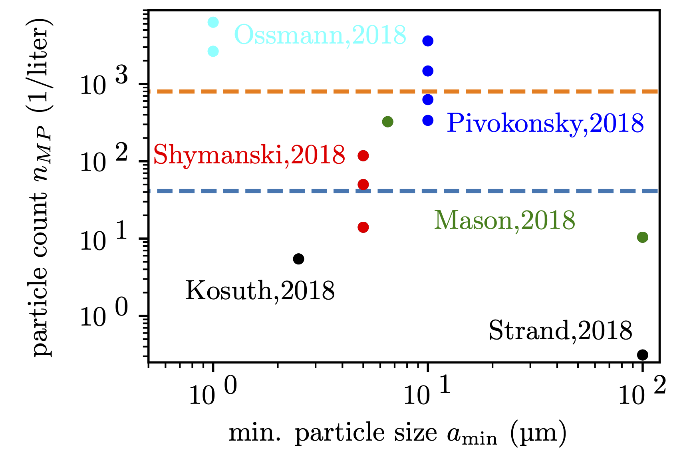
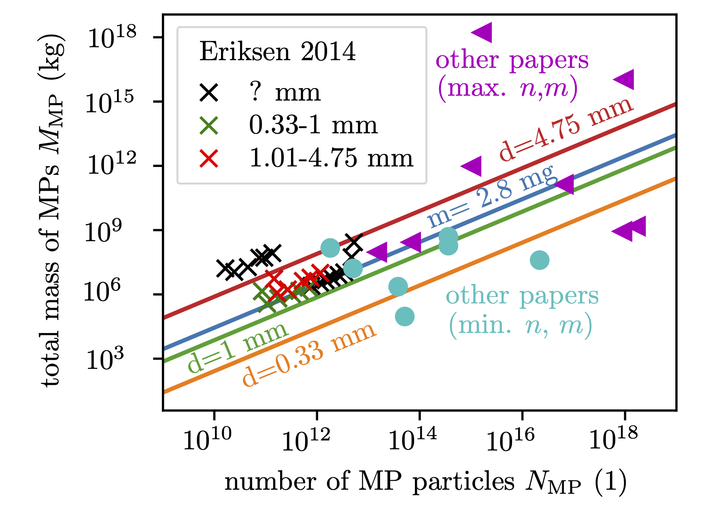
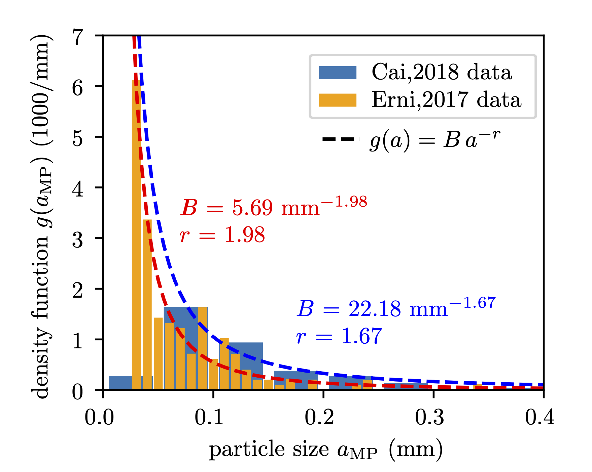

“Du 😋 jede Woche :0,1 g bis 5 g an Mikroplastik”.
Martin Pletz, Leoben, 2023-11.
Das wird im Paper (Senathirayah et al. 2021) berechnet. Doch :wie?
Als erstes schätzen sie ab, was Menschen an Wasser aus Flaschen (💧) und Bier (🍺) :trinken bzw. Salz (🧂) und Krustentiere (🦀) :essen. Dann suchten sie in der Literatur nach Arbeiten, die herausfanden, wie viele Mikroplastikpartikel pro Liter oder Kilogramm in 💧, 🍺, 🧂 und 🦀 enthalten ist and nach Arbeiten, aus denen sie die Größe und damit das Gewicht dieser Partikel abschätzten.
Dementsprechend nimmt man in der Woche 173 bis 3355 (💧), 3,4 bis 17 (🍺), 0,79 bis 2,1 (🧂) und 50 bis 312 (🦀) Partikel auf. :Unabhängig von den Arbeiten, die Partikelzahlen bestimmt haben, schätzen :drei Szenarios schätzen sie das Partikelgewicht ab und kamen damit auf 5.5 g/Woche, 0.1 g/Woche und 0.3 g/Woche.
Das ist aber ein Problem: umso genauer man hinschaut, umso mehr Partikel findet man. Für Wasser schaut das so aus:

Das ist natürlich ein großes Problem, wenn man bei den mittleren Partikelmassen nicht berücksichtigt, wie genau man bei den Partikelzahlen hingeschaut hat.
Wird in Senathirayah et al. 2021 nicht ganz klar, könnte 219 Liter Wasser aus Plastikflaschen und 6 Liter Bier (wobei sie sich auf eine WHO Website und die Zahlen für Deutschland beziehen und vermutlich die Liter an reinem Alkohol (6) mit Litern an getrunkenem Bier verwechselt haben, die wohl eher bei 90 Litern pro Kopf und Jahr liegt) im Jahr sein
Etwa 3,8 kg Salz und 20 kg Fisch im Jahr
diese 13 mg entsprechen kugelförmigen Partikeln mit einem Durchmesser von 2,94 mm
ja, aus dem Meer! Wenn du dich fragst, warum die Partikel mit Meer genau so groß sein sollen wie die in unseren Nahrungsmitteln, dann hast du Recht.
da das Diagramm mit den Cox und anderen Arbeiten reintun und erklären…

Unter der Annahme, dass das Partikel in Plastikflaschen sind und aus PET bestehen (Dichte von 1.4 g/cm3) kommt man damit auf einen Durchmesser von 1.56 mm. Was insofern interessant ist, als dass die angeblich für einen Größenbereich von 0-1 mm bestimmt wurden.
da ein schönes Diagramm her tun und das erklären…

Was nicht besonders realistisch ist: Zum Beispiel hier wird beschrieben, dass die meisten Partikel Fasern und Folien sind, die bei gleicher Größe sehr viel kleinere Massen aus Kugeln haben.
Was noch unrealistischer als die Kugelform ist: Würfelförmige Partikel kommen in Arbeiten, die sich mit den Partikelformen von Mikroplastik beschäftigen, überhaupt nicht vor.